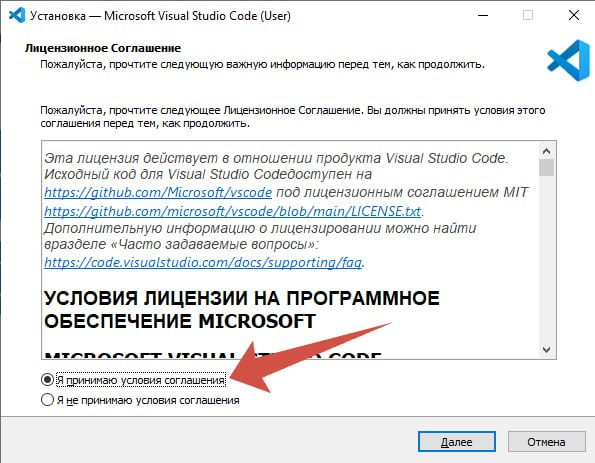
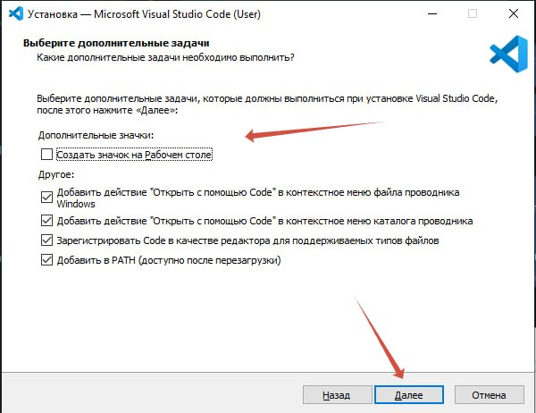
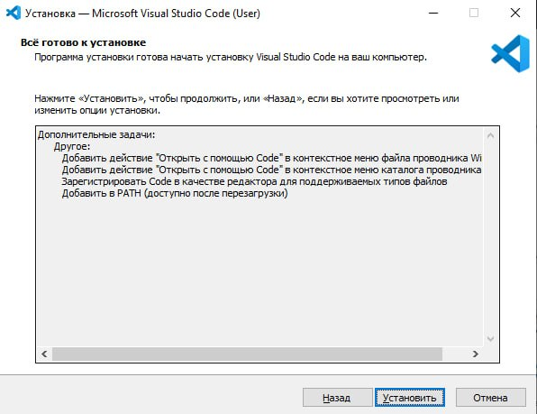
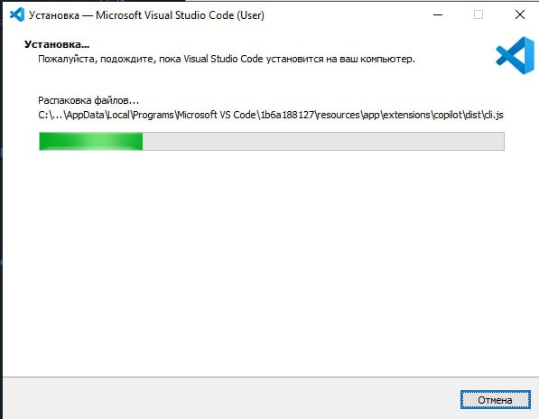

Локальный сервер Minecraft 1.11.2 для Python
Эта инструкция нужна, чтобы запустить готовый сервер и управлять миром из Python через библиотеки mcpi и minecraftstuff. Сервер заново собирать не нужно: папка уже готова.
Что нужно для занятий Python Minecraft
Minecraft, локальный сервер, Python, VS Code и библиотеки mcpi.
Ниже инструкция по установке.
Шаг 1: Установите Minecraft 1.11.2
Клиент игры ставится через TLauncher: https://tlauncher.ru/
Нажмите «Скачать TLauncher», выберите свою операционную систему и нажмите зелёную кнопку. Скачается установочный файл.


Запустите скачанный файл и на каждом окне нажимайте «Продолжить». В лицензии отметьте «Я принимаю условия лицензионного соглашения».


Запустите TLauncher. Если Windows спросит про брандмауэр, нажмите «Разрешить доступ».

Придумайте короткий логин и введите его в поле слева внизу. Слишком длинное имя вводить нельзя: не больше 16 символов.

В списке версий выберите 1.11.2. На скрине это три строки: OptiFine 1.11.2, ForgeOptiFine 1.11.2 или Forge 1.11.2. Подойдёт любая из них.

Нажмите жёлтую кнопку «Установить». Начнётся загрузка игры, дождитесь окончания.


Когда установка закончится, появится окно «Установи свой скин!». Поставьте галочку «Не показывать больше данное уведомление» и нажмите «ОК».

Шаг 2: Установите сервер
Откройте папку на Google Диске и скачайте архив server.zip. Собирать сервер заново не нужно.
Нажмите «Скачать» справа от файла server.zip.

Если появится окно «Не удалось проверить файл на наличие вирусов», нажмите «Всё равно скачать». Предупреждение появляется из‑за размера архива.

Откройте скачанный архив и перетащите папку server из него на рабочий стол.

Внутри уже лежит:
start.bat— запуск сервера;spigot-1.11.2.jar— сам сервер Minecraft 1.11.2;plugins— плагин, через который Python потом подключится к игре;runtime— Java 8.
runtime. Запускать сервер нужно файлом start.bat на следующем шаге.
Шаг 3: Проверка — зайдите на сервер
Откройте папку server и запустите файл start.bat.

Подождите около 10 секунд, пока прогрузится чёрное окно сервера. Строка Done в конце означает, что сервер работает.

stop и нажмите Enter.
В главном меню Minecraft нажмите «Сетевая игра».

Нажмите «Добавить».

В поле «Адрес сервера» напишите localhost и нажмите «Готово».

В списке появится сервер. Нажмите на него, затем нажмите «Подключиться».

Если всё сделано верно, вы окажетесь в обычном мире: холмы, деревья, вода. В чате будет сообщение, что ваш ник зашёл в игру.

Шаг 4: Установите Python
Скачайте Python с главной страницы сайта. Если Python уже установлен, этот шаг можно пропустить.
Откройте python.org и нажмите кнопку загрузки для Windows. В меню сайта этот пункт называется Downloads.


Дождитесь окончания установки. Когда появится надпись Setup was successful, нажмите Close.


Проверка: откройте командную строку, введите python --version и нажмите Enter. Должна появиться версия Python 3, например Python 3.14.x.

Шаг 5: Установите VS Code
Visual Studio Code — редактор, в котором пишут программы на Python. Скачайте его с сайта https://code.visualstudio.com/ и нажмите синюю кнопку загрузки для Windows.


Запустите скачанный файл. Примите лицензионное соглашение и нажмите «Далее».

В окне дополнительных задач отметьте значок на рабочем столе и пункты «Открыть с помощью Code». Галочка «Добавить в PATH» должна стоять. Затем нажмите «Далее» и «Установить». Когда установка закончится, нажмите «Завершить».



В VS Code откройте вкладку «Расширения», найдите Python от Microsoft и нажмите «Установить».
Шаг 6: Установите библиотеки Python
Откройте VS Code. В левом нижнем углу нажмите треугольник, чтобы открыть консоль.

Вверху панели выберите вкладку Terminal.

Вставьте команду pip install mcpi minecraftstuff и нажмите Enter.

Дождитесь строки Successfully installed mcpi minecraftstuff. Эти две библиотеки бесплатные.

Инструкция создана для образовательных целей.